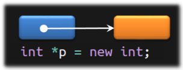
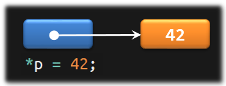

The new Operator
Like Java, C++ uses the new operator to allocate memory on the heap. In its simplest form, the new operator takes a type and allocates space for a single variable of that type located on the heap. For example, look at this code:

int *p = new int;The new operator returns the address of the variable it allocates. I just ran this on my machine and the first location on the heap was located at address 0x558f24791eb0, so that is what is stored in the variable p.
Knowing the exact address value stored in p is really meaningless; instead, realize that whatever the address, the variable p on the stack always points to the newly allocated int on the heap. That means we can indicate the relationship with an arrow.
To use the object on the heap, just dereference the pointer. To store 42 just write this:

*p = 42;Using the raw new operator to create an object leaves the variable uninitialized if it is a primitive or built-in type and default initialized for class types. Instead creating uninitialized elements on the heap, you can initialize individual variables by using direct initialization. In C++11, you can also use uniform initialization.
int *p1 = new int; // uninitialized
int *p2 = new int(42); // direct initialized
string *p3 = new string; // default initialized
double *p4 = new double{}; // default (c++11) This course content is offered under a
CC
Attribution Non-Commercial license. Content in this course
can be considered under this license unless otherwise noted.
This course content is offered under a
CC
Attribution Non-Commercial license. Content in this course
can be considered under this license unless otherwise noted.